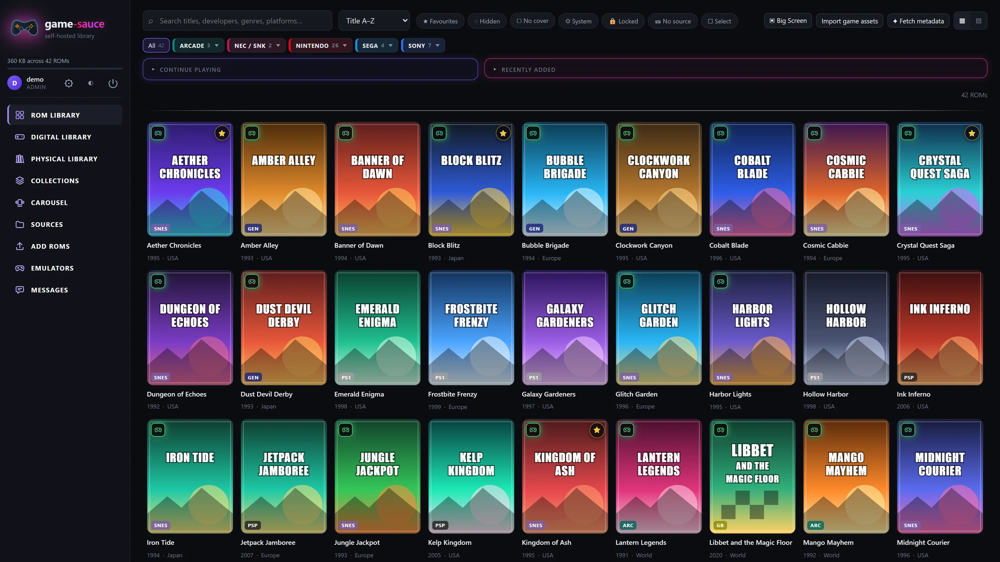

I tuoi giochi, il tuo controllo
game‑sauce NON li modifica e NON li sposta MAI, e le tue librerie digitale e fisica sono solo per i tuoi occhi.
Gratuito · open source · self-hosted
game-sauce cataloga i giochi che possiedi, scarica le grafiche, ne fa girare molti nel tuo browser, avvia gli altri negli emulatori sul tuo PC e porta l'intera libreria sulla TV con uno Schermo grande comandato dal gamepad.
Windows · macOS (Apple silicon) · Linux · Docker, Unraid e Proxmox · Raspberry Pi
Gli screenshot e i video mostrano una libreria dimostrativa. Le copertine e le immagini dei giochi appartengono ai rispettivi proprietari.
Un unico posto per la libreria di tutta la famiglia, su una macchina che controlli tu.
game‑sauce NON li modifica e NON li sposta MAI, e le tue librerie digitale e fisica sono solo per i tuoi occhi.
Qualunque sia il tuo gusto. Non giudichiamo mai.
Copertine, loghi, video, manuali. Scaricati o dalle tue fonti.
Con i giochi supportati: mobilità grazie agli stati di salvataggio sul server. Metti giù, carica e riparti.
game‑sauce al tuo servizio: scegli gioca e via, senza fatica.
La tua libreria sulla TV. Pensato per il controller, niente tastiera.
Le Blades della XBOX 360 in modalità Big Screen.
I giochi al centro della scena.
Decidi tu.
a volontà.
Noi ti diamo gli scaffali.
Giocando ai tuoi giochi Steam preferiti.
Dai un'occhiata a quanto hai pagato i tuoi giochi, se hai il coraggio.
Con report su giochi e libreria.
Ammirali e pensa: come ho fatto a perdermeli?
Niente scuse: è proprio lì, in game‑sauce.
Una stella per il meglio e le raccolte per il resto.
Account, ruoli e modalità solo gioco per i più piccoli.
Vanta il tuo record. Resta in casa.
No-Intro e Redump garantiscono che è tutto in regola.
Trova i duplicati e suggerisce il migliore da tenere.
sf2 diventa Street Fighter II.
Stai catalogando i tuoi giochi? Fai di game‑sauce la tua fonte di verità.
i tuoi giochi, a modo tuo
game‑sauce fa anche il turno di notte: le impronte dei giochi si creano mentre dormi.
Backup e ripristino facili, programmabili per stare tranquilli.
Dovrebbero averne uno tutti.
English, Français, 日本語 e altre. Merci, 谢谢.
L'intera app. Mouse facoltativo.
Niente tracciamento. Nessuna fregatura. Giuro.
Windows, Mac, Linux, Docker, Pi, Proxmox, Unraid.
Classico o Moderno, verso il lato chiaro o quello oscuro?
Le notifiche di aggiornamento arrivano direttamente agli admin di game‑sauce, in chat.
ScreenScraper, SteamGridDB, IGDB, TheGamesDB, risorse di gioco e altro, scegli tu.
Rinomina qualsiasi piattaforma. Non lo diremo a nessuno.
Due brevi clip dalla libreria demo integrata.
Una vista a schermo intero pensata per un gamepad e un divano. Aprila dalla Libreria con un clic e metti il browser o l'app desktop a schermo intero sulla TV.


Uno scaffale di copertine a schermo intero disposte in un arco morbido. Scegli una famiglia e una piattaforma, scorri con i tasti freccia, la rotellina del mouse, uno swipe o un gamepad e premi gioca.
Cataloga i giochi in scatola sul tuo scaffale reale, a mano o da un elenco, accanto alla tua collezione digitale. Ogni persona ha il proprio scaffale.
Messaggi privati tra le persone sul tuo server e avvisi dell'admin. Nulla esce dalla tua macchina.

Aspetti Classico e Moderno, chiaro e scuro. Stessa libreria, a tua scelta.





Scegli quello che fa per te. Ognuno richiede pochi minuti.
Scarica l'app desktop o la versione portatile per Windows, macOS o Linux. Nient'altro da installare: nessun server, nessun Docker, nessuna impostazione da modificare.
Scarica l'ultima versioneEseguilo con Docker, su Unraid o in un container Proxmox e usalo da ogni dispositivo di casa. La guida alla distribuzione spiega i passaggi.
Leggi la guida alla distribuzioneLa prima volta che si avvia, l'account creato per te viene mostrato una sola volta. Annotalo e cambia la password in Impostazioni. Se lo esponi a Internet, mettilo dietro una VPN o un reverse proxy con HTTPS.
No. game-sauce serve a gestire i giochi che possiedi. Non include né fornisce giochi o file BIOS e non scarica giochi per te: porti la tua collezione. Per giocare, il gioco nel browser usa EmulatorJS, un emulatore open source che il tuo browser carica quando premi Gioca. Per giocare sul tuo PC, la pagina Emulatori consiglia degli emulatori e rimanda a dove ottenerli, e il launcher avvia quelli che installi tu.
Sì. È open source con licenza MIT. Non c'è nessun account da creare, nessun abbonamento e nessun tracciamento. Alcuni provider di metadati ti chiedono di registrarti con un tuo account gratuito per usare il loro servizio.
Molte console più vecchie che non richiedono BIOS funzionano da una pagina web. I sistemi più recenti, e tutto ciò che richiede più di quanto un browser possa offrire, si avviano invece in un emulatore sul tuo PC tramite il launcher.
Non nelle cartelle che gli indichi. Li legge dove sono e non sposta, rinomina o elimina mai i file al loro interno. Gli strumenti di pulizia toccano solo le grafiche e i file che game-sauce ha memorizzato da sé.
Sì. Crea account per le persone di cui ti fidi. Le raccolte sono private per chi le ha create e gli account solo gioco vedono soltanto i giochi che si possono giocare nel browser.
Apri una issue o una discussione su GitHub, oppure scrivi a hello@gamesauce.app. La pagina Stato del sistema in Impostazioni crea un rapporto da copiare e incollare senza segreti.
game-sauce è gratuito e open source. Se ti è utile, puoi offrirmi un caffè. Mi aiuta a dedicare più tempo a nuove funzionalità, ai test su Windows, Mac e Linux e alle risposte alle domande.